| Text: english | russian |
MYTH
Mod for Diablo II: Lord of Destruction v1.13c Mod version 1.5.2 (ENG) Description
Exchanges
in
versions
New monsters New unique monsters Gems and runes Unique items Set items Uber items Uber levels Cube recipes Runewords Screenshots New monsters Black
Knight
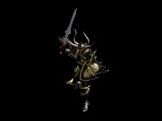 Monster level: 12-36 / 46-75 / 75-86 Immunity on difficulty "Hell": any magic and poison. Skills: different types of magic attacks. Spawn in locations: Tristram, Inner Cloister, Cathedral, Catacombs, Arcane Sanctuary, Durance of Hate 1 - 2, City of the Damned, Chaos Sanctum, Hell 3, Throne of Destruction, Uber Tristram. Rhino Demon 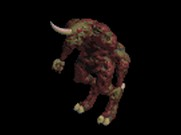 Monster level: 6-34 / 42-70 / 73-90 Immunity on difficulty "Hell": cold. Skills: rush, freeze, extra damage from cold. Spawn in locations: Den of Evil, Caves, Tombs, Canyon of the Magi, Tal Rasha's Tomb, Outer Steppes, Plains of Despair, Hell 1. Mud Man 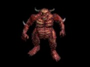 Monster level: 18-37 / 51-72 / 78-90 Immunity on difficulty "Hell": any magic. Skills: powerful punch, stun, extra damage from fire. Spawn in locations: Catacombs Level 4, Arcane Sanctuary, Tal Rasha's Tomb, Durance of Hate Level 3, Chaos Sanctum, Hell 1, The Worldstone Keep Level 2. Stormrider 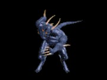 Monster level: 25-35 / 61-76 / 82-88 Immunity on difficulty "Hell": lightning. Skills: powerful electric shock from lightning, extra damage from lightning. Spawn in locations: Flayer Jungle, River of Flame, Hell 3, Crystalized Cavern Level 1 - 2, Glacial Caves Level 1, Furnace of Pain, Uber Tristram. Acid Beast Monster level: 12-33 / 44-73 / 73-86 Immunity on difficulty "Hell": magic and poison. Skills: acid spit, extra damage from magic and poison. Spawn in locations: Tristram, Jail Level 1 - 3, Catacombs Level 4, Kurast Bazaar, Kurast Causeway, Bloody Foothills, Halls of Anguish, Halls of Death's Calling, Halls of Vaught, Ice Prison, Uber Tristram. Mosquito Nest 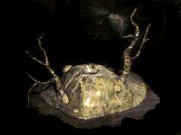 Monster level: 21-24 / 49-53 / 79-85 Immunity on difficulty "Hell": no. Skills: very hardy den, breed mosquitoes. Spawn in locations: Spider Forest, Sewers Level 1 - 2, Durance of Hate Level 1. Bone Golem Monster level: 12-33 / 44-73 / 74-88 Immunity on difficulty "Hell": cold. Skills: strong, extra damage from poison. Spawn in locations: Tristram, Cathedral, Halls of the Dead Level 1 - 3, Tal Rasha's Tomb, Travincal, Sewers Level 1 - 2, Halls of Anguish, Uber Tristram. Pit Fiend 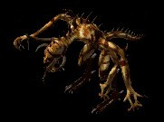 Monster level: 21-33 / 54-74 / 80-85 Immunity on difficulty "Hell": physical. Skills: lightning ball, extra damage from lightning. Spawn in locations: Halls of the Dead Level 1 - 3, Lost City, Arreat Plateau, Halls of Anguish. Deathwing 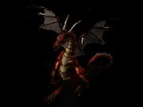 Monster level: 16-35 / 54-74 / 77-87 Immunity on difficulty "Hell": fire. Skills: breath of fire, extra damage from fire. Spawn in locations: Tamoe Highland, Great Marsh, Kurast Bazaar, Hell 1. Treant 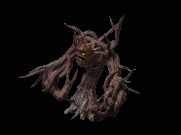 Monster level: 12-35 / 45-72 / 76-88 Immunity on difficulty "Hell": magic. Skills: freeze, accelerated, stun. Spawn in locations: Dark Wood, Black Marsh, Tundra Wastelands. Drow Drider 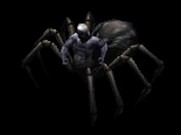 Monster level: 25 / 62 / 82 Immunity on difficulty "Hell": physical and poison. Skills: powerful attack, poison hit, produces web with escape. Spawn in locations: Spider Forest, Spider Cave, Spider Cavern. Drowned Dead 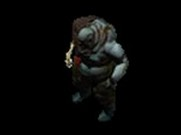 Monster level: 16-26 / 48-62 / 75-84 Immunity on difficulty "Hell": physical and poison. Skills: strong, poison hit, escape at high risk. Spawn in locations: Monastery Gate, Outer Cloister, Jail Level 1 - 3, Ancient Tunnels, Great Marsh, Resident Evil Level 1 - 3. Great Lich Monster level: 26-32 / 66-73 / 83-90 Immunity on difficulty "Hell": fire and cold. Skills: Glacial Spike, Frost Nova, Fire Ball, Weaken. Spawn in locations: Kurast Causeway, Travincal, Rigid Highlands. Poltergeist 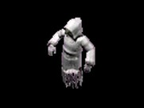 Monster level: 7-25 / 43-64 / 72-83 Immunity on difficulty "Hell": physical and cold. Skills: flight, strong, mana burn, extra damage from cold. Spawn in locations: Burial Grounds, Crypt, Mausoleum, Temples in Act 3 (1 - 6). Cursed Soul 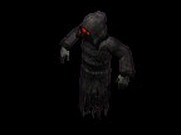 Monster level: 14-26 / 46-63 / 75-84 Immunity on difficulty "Hell": physical and lightning. Skills: flight, strong, mana burn, extra damage from lightning. Spawn in locations: Underground Passage Level 1, Hole Level 1, Pit Level 1, Stony Tomb Level 1 - 2, Halls of the Dead Level 1 - 3, Resident Evil Level 1 - 3, Sewers Level 1 - 2, Uber Tristram. Djinn Monster level: 23 / 57 / 81 Immunity on difficulty "Hell": physical and magic. Skills: flight, random magic attacks. Spawn in locations: Harem Level 2, Palace Cellar Level 1 - 3. Marilith Monster level: 23 / 57 / 81 Immunity on difficulty "Hell": poison and lightning. Skills: strong, extra damage from fire, cold and lightning. Spawn in locations: Harem Level 2, Palace Cellar Level 1 - 3. Forest Troll 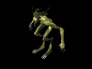 Monster level: 26 / 63 / 82 Immunity on difficulty "Hell": magic and poison. Skills: accelerated, average strength, extra damage from poison. Spawn in locations: Flayer Jungle, Lower Kurast, Upper Kurast. Mountain Troll Monster level: 33 / 74 / 89 Immunity on difficulty "Hell": magic and cold. Skills: accelerated, average strength, extra damage from cold. Spawn in locations: Rigid Highlands, Arreat Plateau, Tundra Wastelands. Feyr 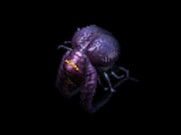 Monster level: 17-35 / 54-73 / 78-84 Immunity on difficulty "Hell": lightning. Skills: flight, average strength, drains mana and stamina, extra damage from lightning. Spawn in locations: Catacombs Level 1 - 3, The Worldstone Keep Level 1. Hell Feyr 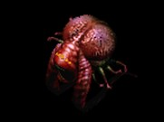 Monster level: 27-33 / 68-74 / 85-87 Immunity on difficulty "Hell": fire. Skills: flight, average strength, drains mana and stamina, extra damage from fire. Spawn in locations: River of Flame, Hell 1 - 3. Warlock Monster level: 24 / 56 / 83 Immunity on difficulty "Hell": fire and magic. Skills: Teeth, Bone Spirit, Bone Spear, extra damage from magic. Spawn in locations: Great Marsh or Flayer Jungle, Resident Evil Level 1 - 3. Gravedigger 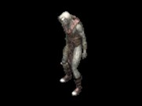 Monster level: 45 / 85 / 105 Immunity on difficulty "Hell": magic. Skills: extra damage from fire. Spawn in locations: Resident Evil Level 1 - 3. Abyss Beast 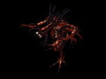 Monster level: 25-33 / 67-74 / 80-86 Immunity on difficulty "Hell": fire. Skills: fast, strong, extra damage from fire, immune to the negative skills and damnation. Spawn in locations: River of Flame, Chaos Sanctum, Hell 2. Tuscampa 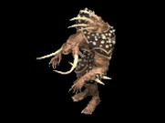 Monster level: 35 / 70 / 82 Immunity on difficulty "Hell": lightning. Skills: fast, stun, extra damage from lightning. Spawn in locations: Halls of Pain or Halls of Anguish. Werewolf 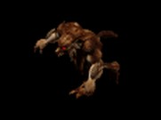 Monster level: 24-32 / 58-72 / 81-84 Immunity on difficulty "Hell": lightning and poison. Skills: fast, stun, extra damage from magic. Spawn in locations: Great Marsh, Kurast Bazaar, Rigid Highlands, Arreat Plateau. Ripper 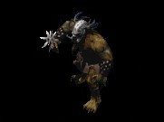 Monster level: 21-34 / 55-74 / 81-88 Immunity on difficulty "Hell": lightning. Skills: powerful punch, stun. Spawn in locations: Dry Hills, Far Oasis, Tundra Wastelands, Halls of Death's Calling, Halls of Vaught. Orog Marauder 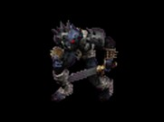 Monster level: 21-35 / 53-73 / 81-85 Immunity on difficulty "Hell": lightning. Skills: extra damage from fire. Spawn in locations: Dry Hills, Far Oasis, Lower Kurast, Upper Kurast, Kurast Causeway, Tundra Wastelands, Halls of Death's Calling, Halls of Vaught. Orog Chieftain 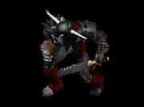 Monster level: 22-36 / 54-73 / 81-86 Immunity on difficulty "Hell": cold and poison. Skills: extra damage from cold. Spawn in locations: Dry Hills, Far Oasis, Lower Kurast, Upper Kurast, Kurast Causeway, Tundra Wastelands, Halls of Death's Calling, Halls of Vaught. Orog Elite 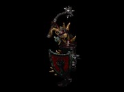 Monster level: 23-37 / 56-74 / 81-86 Immunity on difficulty "Hell": fire and magic. Skills: witchcraft and melee attack, different types of magic attacks. Spawn in locations: Arcane Sanctuary, Durance of Hate Level 1 - 3, The Worldstone Keep Level 1 - 3, Throne of Destruction. |